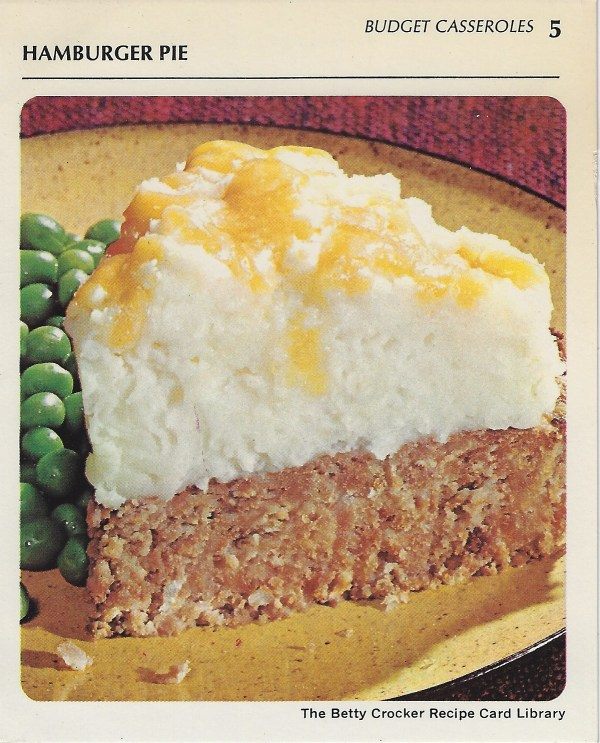

Hamburger Pie
Back to table of contents

Ingredients
- 1 pound ground beef
- Potato Buds instant puffs (enough for 8 servings)
- 1 egg
- 1 teaspoon salt
- 1/8 teaspoon pepper
- 1 tablespoon instant minced onion
- 3/4 cup catsup
- 1 cup milk
- 1/2cup shredded sharp Cheddar cheese (2 ounces)
Preparation
- Heat oven to 350°.
- Mix meat, 11/3 cups of the instant puffs (dry), the eggs, salt paper, onion, catsup and milk
- Spread in ungreased pie pan, 9×1 1/2 inches.
- Bake uncovered 35 to 40 minutes.
- STORE, loosely covered, in coldest part of the refrigerator up to 24 hours (if you are planning to use the ground beef within 24 hours of purchasing).
- FREEZE for longer storage
- Wrap one-pound packs or individual patties in freezer wrap, separating patties with double layer of freezer wrap
- Store no longer than 4 months.